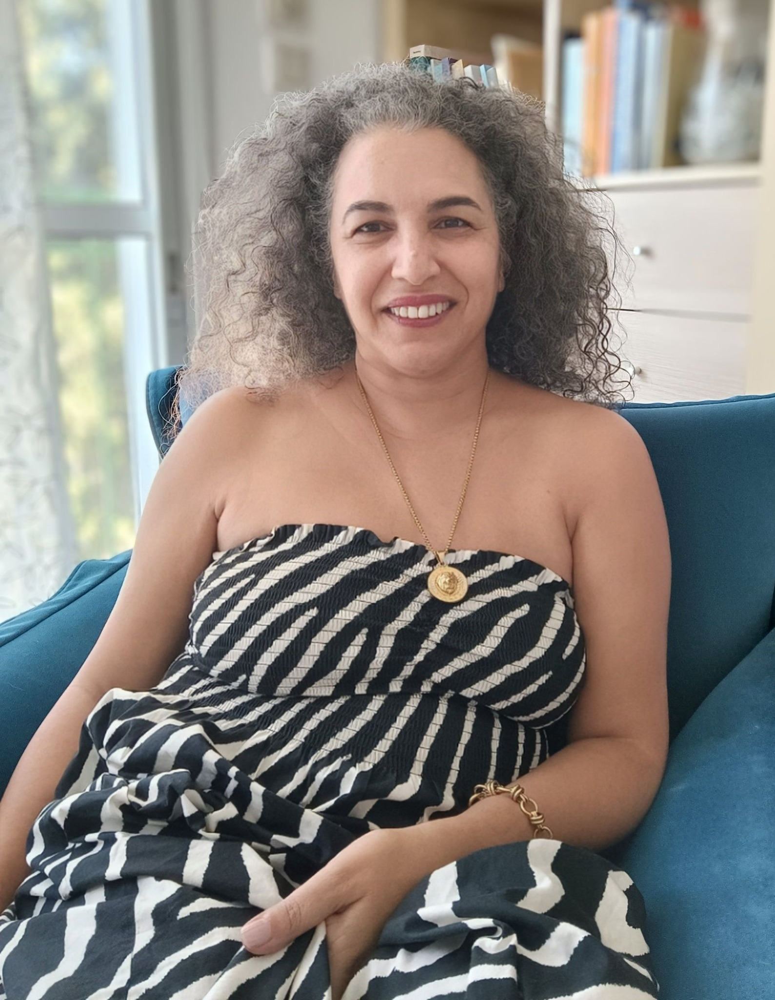

בלי למהר לדעת
גם „לא יודעת” היא תשובה. אפשר לדלג, לחזור או להשאיר משהו פתוח.
נעים להכיר · אני מאחורי Joyfulness
אני מטפלת ומלווה נשים שרגילות להיות שם בשביל כולם — ורוצות לחזור אל הגוף, אל הרצון ואל מה שעושה להן טוב.
בלי ציון · בלי אבחון · בקצב שלך

איך אני רואה את הדרך
כמטפלת ומלווה אני פוגשת נשים דרך הגוף, הגבולות, הרצון ותודעת העונג. אני מאמינה שעונג הוא לא פרס שמגיע אחרי שהכול נגמר — הוא דרך לדעת מה מתאים לך ומה מחיה אותך.
בליווי איתי לא צריך להגיע עם תשובה. אפשר להתחיל מ„אני לא יודעת”, להקשיב לגוף ולתת לרצון להופיע בקצב שלו.
אני מציעה לך שלוש דלתות
כל מסע נוגע בחלק אחר של אותה שאלה: איפה את בתוך החיים שלך?
מה חשוב לי בדרך
גם „לא יודעת” היא תשובה. אפשר לדלג, לחזור או להשאיר משהו פתוח.
השיקוף מחזיר אלייך את המילים והבחירות שלך; הוא לא קובע מי את.
עצירה היא הקשבה. הכפתור „די לי בינתיים, תודה” נשאר איתך לאורך הדרך.
אפשר להזמין אותי אליכן
אני מגיעה לסלון, למעגל נשים או לקבוצה אינטימית ומספרת סיפור שפותח שיחה על רצון, גוף, גבולות ועונג. לא הרצאה מרחוק — מפגש חי, קרוב ואנושי.
סיפור שאפשראתן מביאות את הבית ואת הנשים.
להרגיש בו,
לצחוק איתו,
ולהמשיך לדבר
אחריו.
ואם את רוצה להמשיך אחת על אחת
אפשר להביא לשיחה את מה שעלה במסע — או להגיע בלי מילים מסודרות. נבדוק יחד מה מבקש מקום ואיך נכון לך להתקרב אליו.
היומן עדיין אינו מחובר בגרסת ההדגמה.